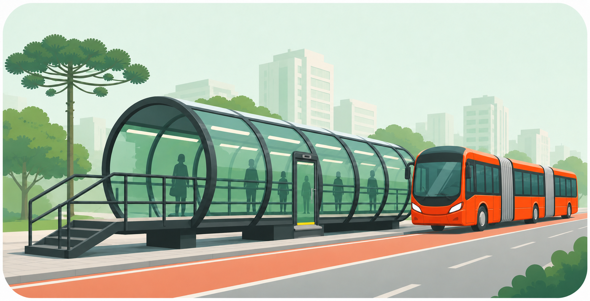

Histórico de circulação
Consulte os períodos publicados, linhas, horários e trechos analisados a partir das posições de GPS divulgadas pela URBS.
Mobilidade urbana em dados abertos
Explore estimativas de velocidade nas canaletas a partir de registros históricos de GPS da URBS — e compare uma viagem real, registrada pelo celular.
Dados abertos da URBS · análise independente

Uma leitura cuidadosa
O projeto estima a velocidade entre posições consecutivas dos veículos. Como a base pública não informa nem a velocidade nem o limite de cada via, os resultados apontam padrões e possíveis ocorrências — não são medições de radar.
Consulte os períodos publicados, linhas, horários e trechos analisados a partir das posições de GPS divulgadas pela URBS.
Ajuste o limite de referência, filtre grupos de linhas e visualize distribuições, tabelas e mapas dos trechos publicados.
Como passageiro, registre seu trajeto com GPS para guardar e comparar viagens reais da sua conta.
Sobre mim
Engenheiro de Software, analista de dados, mestre em Ensino de Física e licenciado em Física. Atuo na interseção entre tecnologia, dados e educação científica, buscando transformar informações complexas em ferramentas úteis para as pessoas.
Comece por aqui
Os dados disponíveis, o período coberto e as limitações metodológicas estão explicados dentro do painel.